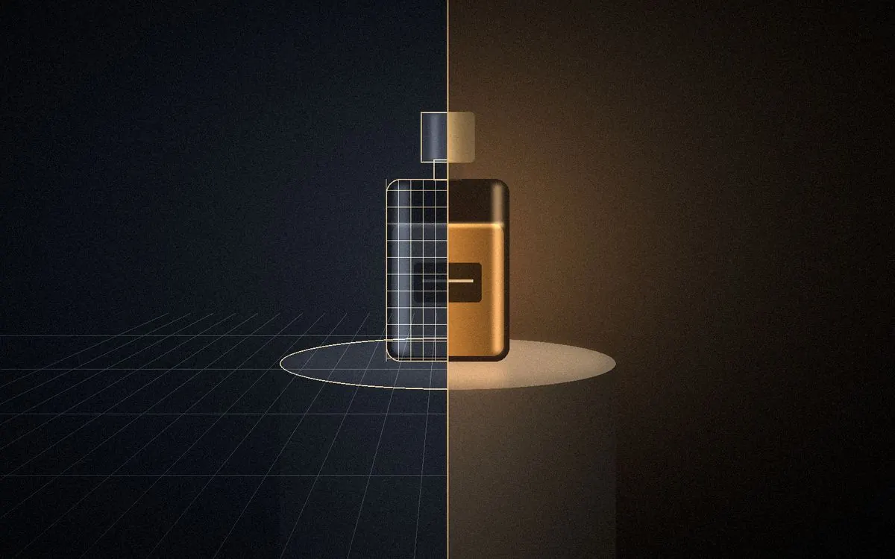

3D a Blender
3D modelování, produktové rendery a animace
Ukažte produkt dřív, než existuje. Nebo z úhlu, který fotoaparát nezachytí.
- Cena od 5 000 Kč
- 5–15 pracovních dní

Postavíme 3D model produktu podle výkresů, CAD dat nebo fotek a rozměrů a vyrenderujeme ho ve fotorealistické kvalitě. Rendery použijete v e-shopu, katalogu, na billboardu i v reklamním spotu.
Výhoda 3D je v opakovatelnosti: z jednoho modelu připravíte libovolné barevné varianty, nové úhly nebo animaci, aniž byste znovu fotili. Pracujeme v Blenderu a výstupy ladíme tak, aby šly vedle skutečných fotek.
Co obsahuje
- 3D model podle výkresů, CAD dat nebo fotek
- Materiály a textury podle vzorků
- Studiové nebo kontextové osvětlení
- Fotorealistické rendery
- Postprodukce renderů
- Dvě kola připomínek
Co dostanete
- Rendery ve vysokém rozlišení (PNG/JPG/WebP)
- Volitelně animace ve 4K
- 3D model pro další použití
Technika a software
- 01
Software
Blender (Cycles a EEVEE) pro modelování, materiály a render
- 02
Vstupní data
Import CAD a 3D formátů (STEP, OBJ, FBX, GLB)
- 03
Výkon
Renderovací stanice s výkonnými GPU
- 04
Postprodukce
Adobe Photoshop a After Effects
Kalkulačka ceny
Naklikejte si rozsah a hned uvidíte orientační cenu. Kalkulaci pak můžete jedním klikem poslat jako poptávku.
Jak to probíhá
- 1
Konzultace
Probereme cíl, publikum a rozpočet. Navrhneme formát a rozsah, který dává smysl.
VýstupNávrh řešení a nabídka na míru - 2
Příprava
Scénář, storyboard, lokace, povolení k letu a harmonogram natáčecího dne.
VýstupScénář, storyboard a harmonogram - 3
Natáčení
Natáčení, focení, lety dronem nebo 3D skenování prostoru. Na place máte jednoho člověka, který vše řídí.
VýstupNatočený a nafocený materiál - 4
Postprodukce a předání
Střih, grading, zvuk a export ve formátech pro web, sociální sítě i velké plátno.
VýstupHotové soubory ve všech formátech
Časté dotazy
Co potřebujete jako podklad?
Ideálně výkresy nebo CAD data. Stačí ale i fotky a rozměry.
Kolik stojí 3D render produktu?
Jednoduchý produkt s několika rendery začíná kolem 5 000 Kč. Cenu ovlivní složitost modelu, počet renderů a animace. Spočítejte si to v kalkulačce.
Dá se render použít v reklamě?
Ano, rendery a animace dodáváme v kvalitě pro web, tisk i video.
Můžeme model později upravit?
Ano. Model zůstává a nové varianty z něj připravíme rychleji.
Umíte model i pro web a rozšířenou realitu?
Ano, model připravíme ve formátech GLB a USDZ pro 3D prohlížeč na webu.
Související články
Máte projekt?
Popište nám ho ve čtyřech krocích. Nabídku pošleme e-mailem.
Další služby
Ilustrační obrázky, nahradíme fotkami z realizace.